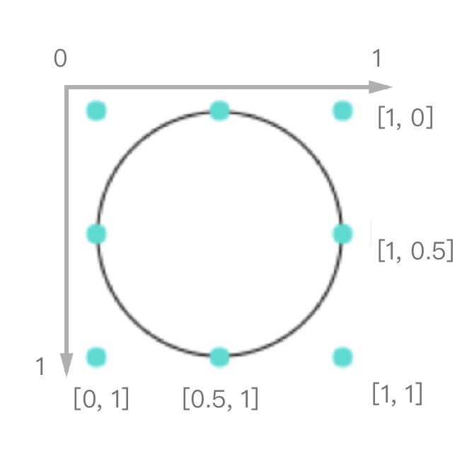

G6
G6 是一个简单、易用、完备的图可视化引擎，它在高定制能力的基础上，提供了一系列设计优雅、便于使用的图可视化解决方案。能帮助开发者搭建属于自己的图 图分析 应用或是 图编辑器 应用
最近一直在被G6可视化工具困扰，在逐渐摸索过程中，慢慢可以进行简单图例的搭建
以下，根据react中如何使用G6来写这篇文章
—-Go
整体项目使用es6模块化开发
首先下载G6
npm install @antv/g6 –save
1
2
3
4
5
6
7
8
9
10
11
12
13
14
15
16
17
18
19
20
21
22
23
24
25
26
27
28
29
30
31
32
33
34
35
36
37
38
39
40
41
42
43
44
45
46
47
48
49
50
| import React from 'react';
import G6 from '@antv/g6';
class G6 extends React.Component {
constructor(props) {
super(props);
this.state={
};
}
componentDidMount() {
// dom 已经渲染完成时加载图片, G6渲染依赖根节点
this.renderG6();
}
renderG6 = () => {
// 渲染图所需数据
const data = {
nodes: [{
id: 'node1',
shape: 'customNode',
x: 100,
y: 200
},{
id: 'node2',
x: 300,
y: 200
}],
edges: [{
id: 'edge1',
target: 'node2',
source: 'node1'
}]
};
// 初始化G6图
const graph = new G6.Graph({
container: 'mountNode',
width: 600,
height: 300
});
// Graph 是最基础的图类, G6 技术栈中所有关系图都是由该类负责绘制
// 读数据
graph.read(data);
}
render() {
return (
<div id="mountNode"></div>
)
}
}

|
自定义节点
1
2
3
4
5
6
7
8
9
10
11
12
13
14
15
16
17
18
19
20
21
22
23
24
25
| G6.registerNode('customNode', {
draw(item){
// draw 是图项最终绘制的接口， 可以拿到shape为customNode的所有数据
const group = item.getGraphicGroup(); // 获取 G (图形库) 的图形图组
const model = item.getModel();
// 图形数据
return group.addShape('rect', {
attrs: {
x: 0,
y: 0,
width: 100,
height: 100,
stroke: 'red'
}
anchor: array || object || callback
<!-- anchor: [
[0.5, 1], // 底边中点
[0.5, 0], // 上边中点
[1, 0], // 左边中点
[1, 0.5], // 右边中点
], -->
});
}
}, '基于某种图形进行绘制的类型');
|
